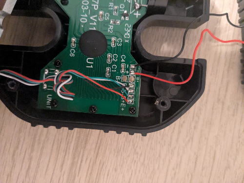
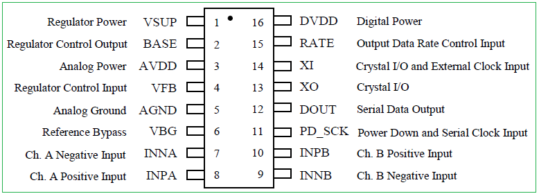
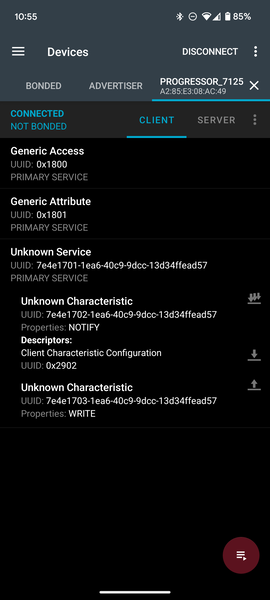

Crimpdeq

Meet Crimpdeq, a portable digital force sensor designed for climbers, coaches, and therapists to measure and train finger strength, pulling power, and endurance. It was inspired by Tindeq Progressor, and works with the Tindeq and Frez apps.
Specs
- Rechargeable battery with USB‑C charging
- Communicates via Bluetooth Low Energy (BLE)
- Open-source firmware written in Rust
- Open-source PCB design
- Automatic sleep when inactive
- Compatible with Tindeq Progressor app (Android | iOS)
- Compatible with Frez app (formerly ClimbHarder) (Android | iOS)
- Sampling frequency: 80 Hz
- Design load: 1500 N (≈150 kg), full scale
- Precision:
- 0.05 kg between 0 and 99 kg
- 0.1 kg between 100 and 150 kg
- Operating temperature: 0–40 °C
- Dimensions: 80 × 90 × 35 mm
- Uses the Tindeq Progressor API
⚠️ Warning: Some of these specs come from the crane scale, if you use a different one, those values might change.
Content of the Book
This book covers everything from assembly and calibration to firmware internals and PCB design. Below are the available sections:
⚠️ Note: If you’re interested in reproducing this project or giving it a try, please, reach out! You can contact me via email (sergio.gasquez@gmail.com), X (formerly Twitter) or Bluesky.
Making Your Own Crimpdeq
This chapter explains how to build your own Crimpdeq prototype.
1. Required Materials
- ESP32-C3-DevKit-RUST-1
- Other ESP32 boards can be used, but you will need a way to charge the battery.
- Battery Holder
- 18650 Battery
- Other batteries might also work, as long as they can power the device.
- Crane Scale or Amazon alternative
- Other crane scales might also work.
- HX711 module:
- [Optional] Resistors:
- 1× 33 kΩ resistor
- 1× 10 kΩ resistor
2. Disassemble the Crane Scale

- Desolder the battery connections.
- Desolder the four wires of the load cell (
E-,S-,S+andE+) from the PCB.  - Unscrew and remove the PCB along with the display.
3. Soldering
-
Modify the HX711 module:
- Set the sample rate to 80 Hz: Most HX711 modules ship with the
RATEpin tied toGND, which sets a 10 Hz sample rate. To switch to 80 Hz: - Cut the PCB trace to the
RATEpin.- This can be done by carefully scratching the trace with a knife.
- Verify with a multimeter that
GNDandRATEare no longer connected.- Take care not to damage adjacent traces.
- Solder the
RATEpin to theDVDDpin. - Verify with a multimeter.
- Cut the PCB trace to the
- [Optional] Optimize measurements for 3.3 V: Most HX711 modules are configured for 5 V operation. To improve measurements at 3.3 V:
- Solder, in parallel, a resistor between 20 kΩ and 27 kΩ across
R1.R1is the highlighted resistor in the image:
- For more information, see this blog post.
- This step is optional, but it improves measurement quality.
- Solder, in parallel, a resistor between 20 kΩ and 27 kΩ across
- Set the sample rate to 80 Hz: Most HX711 modules ship with the
-
Connect the Load Cell to the HX711:
- Solder the 4 wires from the crane scale to the HX711. Typical color mapping:
HX711 Pin Load Cell Pin Description E+ E+ (Red) Excitation positive (to load cell) E- E- (Black) Excitation negative (to load cell) S+ S+ (Green) Signal positive (from load cell) S- S- (White) Signal negative (from load cell) ⚠️ Note: on some HX711 modules the
S+/S-pins are labeledA+/A-. -
Connect the HX711 to the ESP32-C3-DevKit-RUST-1:
| HX711 Pin | ESP32-C3 Pin | Description |
|---|---|---|
| VCC | 3.3V | Power supply (3.3V) |
| GND | GND | Ground |
| DT (Data) | GPIO4 | Data output from HX711 |
| SCK (Clock) | GPIO5 | Clock signal for communication |

- [Optional] Solder the voltage divider:
- Solder one end of the 33kΩ resistor to the
B+pin on the ESP32-C3-DevKit-RUST-1. - Join the other end of the 33kΩ resistor and one end of the 10kΩ resistor together, and connect that junction to
GPIO1on the ESP32-C3-DevKit-RUST-1. - Solder the remaining end of the 10kΩ resistor to
GND.
- The firmware expects the battery sense on
GPIO1by default. Adjust the firmware configuration if you wire a different pin.
- Solder one end of the 33kΩ resistor to the
- Verify all connections with a multimeter.
4. Adapt the Scale Case
- Create space for the USB connector.
- For example: place the board to mark the opening with a pen, then carefully heat a knife and melt the plastic to create space.
- Install the battery holder:
- Glue the battery holder with silicone. Leave the lid for the scale’s original batteries open, you will route the two battery holder wires through that opening.
- Solder the positive wire (red) of the battery holder to a switch or button to turn the device on/off, then solder the other pin of the switch/button to the
B+pin of ESP32-C3-DevKit-RUST-1. - Solder the negative wire (black) of the battery holder to the
B-pin of the ESP32-C3-DevKit-RUST-1.
- Close the case:
- Ensure all components are securely installed before closing the case.

- Ensure all components are securely installed before closing the case.
5. Upload the firmware
-
Connect your device with a USB‑C cable.
-
Pull the
crimpdeq-firmwarerepository:git clone https://github.com/crimpdeq/crimpdeq-firmwareIf you don’t have git installed, you can click the green “Code” button on the repository and use the “Download ZIP” option.
-
Upload the firmware to your device:
- Download the binary from the desired GitHub releases.
- Flash your device
- Using esp.huhn.me.
- Click “Connect” and select the serial port of your ESP board.
- Upload your
.binfile. - Click “Program”.
- See this blog post for more details.
- Using Adafruit ESPTool
- Click Connect and select the serial port of your ESP board (should be named
USB/JTAG serial debug unit...) - Upload your
.binfile at offset0x10000 - Click Program

- Click Connect and select the serial port of your ESP board (should be named
⚠️ Note: If this uploading method doesn’t work for you, refer to the Firmware chapter. You may need to install the prerequisites, build, and flash the firmware.
-
Check whether the default calibration values work for your scale:
- Connect your device with the Frez or Tindeq apps.
- Use the “Live View” option.
- Measure a known weight and verify that Crimpdeq measures the right value.
- If Crimpdeq calibration is off, see the Calibration chapter.
Calibration
This guide will help you calibrate your Crimpdeq device to ensure accurate weight measurements. The calibration process involves using a known weight to establish a reference point for the device’s measurements.
Prerequisites
- nRF Connect installed for your platform:
- A stable mounting point so the device hangs freely and remains still
- One known weight (ideally near your typical maximum load)
Calibration Steps
- Connect to Crimpdeq with nRF Connect:
- Launch the app and go to the Scanner tab.
- Find the device named “Progressor_7125” and tap “Connect”.
- Once connected, the app will display the device’s services and characteristics.

- Locate the calibration characteristic:
- Expand the “Unknown Service” section.
- Find the characteristic with UUID:
7e4e1703-1ea6-40c9-9dcc-13d34ffead57.

- Compute the hex value of your known weight:
- Open the Floating Point to Hex Converter.
- Select “Single-precision” (32-bit) floating point.
- Enter your known weight in the “Float value” field (in kilograms unless your device expects grams; see Important Notes).
- Click “Convert to hex” and save the resulting “Hex value”.
Example: 75.3 kg →0x4296999a.
- Zero the device (tare):
- Hang Crimpdeq with no weight attached.
- Send the command
7300000000to the characteristic:- Tap the Up Arrow icon on the characteristic (
7e4e1703-1ea6-40c9-9dcc-13d34ffead57). - Enter the command as shown.

- Tap the Up Arrow icon on the characteristic (
- Perform the calibration:
- Commands and values are hex strings without spaces (letter case does not matter).
- Attach your known weight to Crimpdeq.
- Build the calibration command by prefixing
73to your hex value.- Example: For 75.3 kg (
0x4296999a), send:734296999a.
- Example: For 75.3 kg (
- Send this command to the same characteristic (
7e4e1703-1ea6-40c9-9dcc-13d34ffead57).
- Verify:
- Remove the weight and reattach it.
- The reported value should be within a small tolerance of the known weight. If not, repeat steps 4–5.
Important Notes
- Units: Some devices expect the calibration value in grams instead of kilograms. If, after calibration, the measured value looks off by a factor of ~100 (e.g., 75.3 kg shows ~0.75), convert your known weight to grams and repeat step 5.
- Use a weight close to the maximum load you expect to measure (while staying within device limits) for best accuracy.
- Ensure the device is stable and stationary when sending commands.
- Perform calibration in a controlled environment (avoid wind, vibration, and temperature swings).
Charging the Battery
To charge your device, follow these steps:
- Connect a USB‑C cable:
- Plug the device into a power source using a USB‑C cable.
- Turn on the device as you normally would.
- A red LED will turn on, indicating that the device is charging.
- Wait for the charge to complete:
- When the red LED turns off, the battery is fully charged.
- You can now unplug the device and use it.

Firmware
The firmware is written in async Rust (no_std) using esp-hal and a small set of supporting crates.
Prerequisites
To build and upload the firmware to your device, ensure you have the following installed:
- Rust
- The
stabletoolchain with the ESP32-C3 target architecture installed:rustup toolchain install stable --component rust-src --target riscv32imc-unknown-none-elf probe-rs, see installation instructions- OS notes:
- Linux: set up udev rules for your debug probe or USB‑Serial device (see
probe-rsudev guide). - Windows/macOS: ensure the correct USB drivers are installed and select the appropriate serial port in your tooling.
- Linux: set up udev rules for your debug probe or USB‑Serial device (see
- OS notes:
How to Build the Firmware
To build the firmware, run:
cargo build --release
This compiles the firmware only. To build and flash the device, see Build and Flash your Device.
How to Flash Your Crimpdeq
Erase Device Memory
If this board was previously used for other projects, erase its flash once:
probe-rs erase
⚠️ Note: Erasing is only needed once. Avoid erasing routinely, or you will lose your calibration values.
Build and Flash Your Device
With a custom runner configured in .cargo/config.toml, you can build, flash, and open a serial monitor with:
cargo run --release
This opens a serial monitor, allowing you to view log messages in real time.
To modify the log level, update the DEFMT_LOG value in .cargo/config.toml or set it when running the command:
DEFMT_LOG=debug cargo run --release
⚠️ Note: If your DevKit does not include USB‑Serial‑JTAG, flash via UART by updating the custom runner in
.cargo/config.tomlto useespflashinstead ofprobe-rs.
Configuring Environment Variables
If you need to change DEVICE_ID, DEVICE_NAME, or DEVICE_VERSION_NUMBER, update their values in .cargo/config.toml.
After making changes, rebuild and flash the device for the new values to take effect.
Code Structure
hx711
This module implements the load cell functionality. It’s an async version of the loadcell crate with additional modifications.
ble
This module implements the Bluetooth Low Energy (BLE) functionality:
- Defines the GATT server and services
- Handles advertising and connections
- Defines the Progressor service with data point and control point characteristics
progressor
The progressor module implements the Tindeq API, enabling BLE (Bluetooth Low Energy) communication between the ESP32-C3 and a smartphone.
Main Tasks
The main.rs file defines several asynchronous tasks that run concurrently:
measurement_task:- Initializes the load cell.
- Handles taring and reads measurements from the sensor.
ble_task:- Long‑running background task required alongside other BLE tasks.
gatt_events_task:- Processes GATT events such as control‑point writes.
data_processing_task:- Handles sending notifications with data points.
battery_voltage_task:- Periodically reads the battery voltage.
deep_sleep_task:- Monitors inactivity; after a timeout, the device enters deep sleep.
Communication between tasks occurs via a Channel.
PCB
The PCB design is maintained in the crimpdeq-hardware repository and was created with KiCad. It is a two-layer board derived from the ESP32-C3-DevKit-RUST-1. This variant removes unused sensors from the original design and adds only the components required for this project.
⚠️ Status: The PCB has not been fabricated yet and is therefore untested.
Advanced Version
The crimpdeq-board repository contains an advanced version of the PCB that includes additional sensors and other improvements.
⚠️ Status: This version is still a work in progress: routing is incomplete, and it has not been fabricated or tested. There is no estimated timeline for availability.